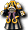

2009/8/26
【變更點報告】
目前沒有留言。留言/更新資訊/20090826?
- &#
【官方公告】
感謝您平日對『神之領域』的愛護。
今天的定期維護進行了以下變更。
 ・稀有外觀彩券、外觀彩券新增彩券限定新道具
・稀有外觀彩券、外觀彩券新增彩券限定新道具
・包包（武器）
・手偶（武器）
・羽翼之盾（盾）
・書包（男女/服）
・垂耳狗（男女/頭）
此外，外觀彩券新增阿修羅專用服8種
 ・卡巴杜姆
・卡巴杜姆
・卡巴富爾凱恩
・塞廷杜姆
・塞廷富爾凱恩

・蘭波沙瓦 ・蘭波恰德爾
・蘭波恰德爾
 ・雅法斯沙瓦
・雅法斯沙瓦
 ・雅法斯恰德爾
・雅法斯恰德爾
・隨機彩券新增「元素戒指」
・稀有外觀彩券限期折扣販售
 稀有外觀彩券（1500Point）限期折扣販售。
稀有外觀彩券（1500Point）限期折扣販售。
- 稀有外觀彩券：1350Point
・修正使用經驗加成[3]會導致取得的善惡經驗值上升的問題
・刊登網路漫畫（第10話）
・更換部分伺服器機器
・修正部分文字
今後也請多多支持『神之領域』。
神之領域營運團隊
2009/8/19
【變更點報告】
目前沒有留言。留言/更新資訊/20090819?
- &#
【官方公告】
感謝您平日對『神之領域』的愛護。
今天的定期維護進行了以下變更。
・神秘寵物包販售
將神秘蛋與3種變態道具（沙鈴、鴨子玩偶、鬧鐘）
組成的套裝道具（價值1680Point）以1480Point販售。
- [第1期機動騎乘型]神秘寵物包
- [第1期裝甲騎乘型]神秘寵物包
- [第1期物理攻擊型]神秘寵物包
- [第1期火魔法型]神秘寵物包
- [第1期搬運輔助型]神秘寵物包
- [第1期支援型]神秘寵物包
- [第1期狀態型]神秘寵物包
- [第2期機動騎乘型]神秘寵物包
- [第2期裝甲騎乘型]神秘寵物包
- [第2期物理攻擊型]神秘寵物包
- [第2期火魔法型]神秘寵物包
- [第2期搬運輔助型]神秘寵物包
- [第2期支援型]神秘寵物包
- [第2期狀態型]神秘寵物包
・稀有外觀彩券限期折扣販售
稀有外觀彩券（1500Point）限期折扣販售。
- 稀有外觀彩券：1200Point
・刊登網路漫畫（第9話）
・伺服器機器維護
・修正部分文字
另外，關於目前發生的問題，已刊載於阿斯加德官方網站FAQ。
會隨時更新，敬請確認。
今後也請多多支持『神之領域』。
神之領域營運團隊
2009/8/12
【變更點報告】
目前沒有留言。留言/更新資訊/20090812?
- &#
【官方公告】
感謝您平日對『神之領域』的愛護。
今天的定期維護進行了以下變更。
・撤除阿修羅轉職活動NPC「由伊謝爾」「威利爾」
・裝備彩券新增詛咒武器「狂怒寶珠」
・什麼都有彩券新增詛咒武器「靈魂吉他」
・變更怪物競技場的舉辦日
- 由週六日改為週一二
・變更赫爾西翁地城的舉辦日
- 由週六改為週日
・變更天空千里行的舉辦日
- 由週日改為週五
・修正魔術師魔法「冰凍驟雨」的習得等級
・變更活動怪物「間諜」的動作
・修正未實裝技能「旋律領域」會掉落的問題
・刊登網路漫畫（第8話）
・伺服器機器維護
・修正部分文字
另外，關於目前發生的問題，已刊載於阿斯加德官方網站FAQ。
會隨時更新，敬請確認。
今後也請多多支持『神之領域』。
神之領域營運團隊
2009/8/5
【變更點報告】
顯示最新的30則。請參閱留言頁面
- 吟遊詩人魔法「專精」似乎已實裝 -- 2009-08-06 (四) 17:52:07
- &#
【官方公告】
感謝您平日對『神之領域』的愛護。
今天的定期維護進行了以下變更。
・更新到版本2.732
客戶端版本將從「2.731→2.732」。
2.732完整客戶端(2.71GB）
2.731→2.732手動更新檔(698KB）
※使用完整客戶端時，
請務必先將目前已安裝的神之領域客戶端
解除安裝後再使用。
・6週年紀念活動「6週年使節團來到神之領域」
【概要】
為紀念神之領域6週年，似乎有個使節團來到了麥索西亞。
遇到使節團的人，會獲贈各種紀念品。
找出使節團來獲得道具吧！！
傳聞聽說使節團的消息後，有間諜被派了進來……。
為了讓使節團的來訪平安結束，也請找出間諜吧。
使用NPC「德雷恩」販賣的道具「間諜探索器」，
就能找出混入使節團的間諜。
【期間】
2009年8月5日（三）～2009年9月2日（三）
【獎品】
遊戲內稀有道具
6週年紀念外觀「阿拉伯服」
・6週年活動「奪回被偷走的寶箱！！」
【概要】
正在玩神之領域的各位！！緊急狀況！！
寶箱從ＧＭ（遊戲管理員）的房間被偷走了。
看來犯人是麥索西亞的怪物們……。
請務必奪回重要的寶箱！！
找到寶箱的人，作為謝禮將贈送寶箱中的其中一樣物品。
寶箱總共有6種。
請在被怪物們打開之前…。
從寶箱可以取得能抽中遊戲內道具和神之領域周邊商品的抽獎券。
【期間】
2009年8月5日（三）～2009年9月2日（三）
【獎品】
遊戲內稀有道具
6週年紀念外觀「鼻眼鏡」
神之領域6週年紀念「手機吊飾（附清潔布）」：共100名
【注意事項】
・持有取得「神之領域周邊抽獎券」之角色，
並從特設頁面的報名表單報名的人，將成為抽選對象。
請務必持有該道具直到活動結束的9月2日。
若在期間結束前丟棄或賣出道具等，
將不在抽選對象內。
・得獎者將以寄送獎品代替公布。
・抽獎券有2種，「神之領域周邊抽獎券[A]」和「神之領域周邊抽獎券[B]」
同時持有的話，中獎機率會提高。
此外，持有多張抽獎券的話，中獎率也會提高。
・組合彩券[2009夏季限定版]限期販售
【概要】
限期以折扣價販售將彩券組合在一起的組合彩券。
組合彩券[2009夏季限定版]：980Point
・外觀彩券：2個
・隨機彩券：10個
・外觀染色劑[隨機]：2個
・神之領域周邊抽獎券[A]：1個
※合計價值1300Point
【期間】
2009年8月5日（三）～2009年9月2日（三）
【獎品】
神之領域6週年紀念「手機吊飾（附清潔布）」：共100名
【注意事項】
・持有取得「神之領域周邊抽獎券」之角色，
並從特設頁面的報名表單報名的人，將成為抽選對象。
請務必持有該道具直到活動結束的9月2日。
若在期間結束前丟棄或賣出道具等，
將不在抽選對象內。
・得獎者將以寄送獎品代替公布。
・抽獎券有2種，「神之領域周邊抽獎券[A]」和「神之領域周邊抽獎券[B]」
同時持有的話，中獎機率會提高。
此外，持有多張抽獎券的話，中獎率也會提高。
・開始常態販售寵物飼育組[企鵝]＆開始販售寵物裝備組[企鵝]
【概要】
將限期販售過的寵物「企鵝」改為常態販售。
另外，新增販售企鵝專用裝備。
・寵物飼育組[企鵝]：750Point
・寵物裝備組[企鵝]：200Point
・舉辦外觀設計比賽
【概要】
徵集神之領域的外觀設計。
被採用的設計將實裝到遊戲內。
說不定能穿上自己構思的外觀來玩神之領域！？
【徵集期間】
2009年8月5日（三）～2009年9月2日（三）
・修正長時間遊玩遊戲有時會發生客戶端當機的問題
・新增防作弊設定
・修正沉默路易斯的道具掉落
・刊登網路漫畫（第7話）
・伺服器機器維護
・修正部分文字
另外，關於目前發生的問題，已刊載於阿斯加德官方網站FAQ。
會隨時更新，敬請確認。
今後也請多多支持『神之領域』。
神之領域營運團隊